配器法原理：繁體中文版
四聲部與三聲部和聲
四聲部與三聲部和聲
木管和聲寫作可從兩種編制來考慮：a）二管編制：2支長笛、2支雙簧管、2支豎笛、2支低音管；b）三管編制：3支長笛、2支雙簧管加英國管、3支豎笛、2支低音管加倍低音管。
A. 二管編制。聲部有三種配置方式：1. 分層配置，也稱疊置，嚴格遵循正常的音域次序；-73-2. 交叉配置；3. 包夾配置。後兩種方法都會在一定程度上打破自然的音域次序：
由左至右：分層配置、交叉配置、包夾配置。
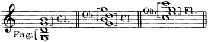
三例由左至右為分層、交叉、包夾配置。
- Fag.＝低音管；
- Cl.＝豎笛；
- Ob.＝雙簧管；
- Fl.＝長笛。
括號指出各音交給哪一種樂器，音符與括號的位置均依原圖保留。
選擇這三種方式之一時，不可忘記下列要點：a）單一和弦所處的音域。一件樂器柔和、較弱的音域，不應與另一件樂器有力、尖銳的音域搭配：
| 分層配置 | 交叉配置 | 包夾配置 |
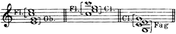 | ||
| 雙簧管 太尖銳。 | 長笛低音 太弱。 | 低音管 太突出。 |
- 三欄各對應一個和弦：左為分層配置，雙簧管過於尖銳；
- 中為交叉配置，長笛低音過弱；
- 右為包夾配置，低音管過於突出。
- Fl.＝長笛，Ob.＝雙簧管，Cl.＝豎笛，Fag.＝低音管；
- 原圖跨三欄顯示，各欄上下文字與相應和弦保持對照。
b）
在一連串和弦中，必須考慮整體聲部進行；保持不動的聲部應交給一種音色，移動的聲部則交給另一種音色：
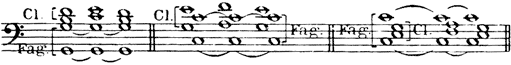
- Cl.＝豎笛；
- Fag.＝低音管。
- 各組和弦區分保持音高的聲部與移動聲部，再由不同音色承擔；
- 三段以雙小節線分隔，連線和聲部走向照原譜。
當和弦採四聲部開放排列時，可以每兩個音為一組，分配給兩種不同音色，並遵循正常音域次序：
| 良好： | 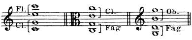 |
依此類推。 |
開放四聲部的良好分層配置。
Fl.＝長笛，Cl.＝豎笛，Fag.＝低音管，Ob.＝雙簧管。
每兩個音成一組，分配給兩種音色，按照音域順序由高至低排列。
其他配置方式，無疑會使各音域之間嚴重失去協調：
| 應避免： | 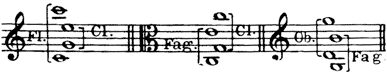 |
依此類推。 |
開放四聲部中應避免的配置。
Fl.＝長笛，Cl.＝豎笛，Fag.＝低音管，Ob.＝雙簧管。
- 與前圖使用相同類型樂器，卻採不同的包夾、交叉安排；
- 保留反例而不自行重配音符。
若要把一種音色包夾在中間，它的上、下方必須是另外兩種不同的音色：
| 良好： | 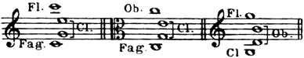 |
依此類推。 |
包夾配置的良好範例。
- Fl.＝長笛，Cl.＝豎笛，Fag.＝低音管，Ob.＝雙簧管；
- 中間音色的上、下兩側使用不同音色。
四聲部開放排列的和弦，可以分別使用四種不同音色，儘管這樣的和弦不會有統一的色彩。不過，各樂器所處的音域越高，彼此之間的間隔就越不容易察覺：
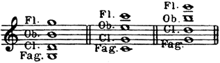
- 三個四聲部開放和弦都由Fl.長笛、Ob.雙簧管、Cl.豎笛、Fag.低音管各奏一音；
- 隨整體音域升高，作者的評語依序為尚可、較佳、更佳。
由左至右：尚可、較佳、更佳。
應避免在四聲部密集排列中使用四種不同音色，因為各樂器的音域無法彼此配合：
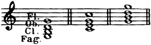
四種音色的密集和弦：Fl.＝長笛，Ob.＝雙簧管，Cl.＝豎笛，Fag.＝低音管。
- 三例音域逐漸提高，評語依序為不佳、較佳、再稍好一些；
- 較佳是相對比較，不等於作者取消前文的避免原則。
由左至右：不佳、較佳、再稍好一些。
註：《莫札特與薩里耶利》只使用1支長笛、1支雙簧管、1支豎笛和1支低音管，因此其中四聲部的木管和弦，勢必交給這四種不同音色。
同樣的規則也適用於三聲部和聲。若和聲基礎的最低音域交給另一個樂器群，例如弦樂弓奏或撥奏，上方採三聲部和聲最為常見。三聲部和弦通常交給兩件相同音色的樂器，再加一件不同音色的樂器，絕不交給三種不同音色。分層配置是最好的方法：
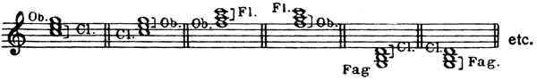
三聲部分層配置的各種排列。
- Ob.＝雙簧管，Cl.＝豎笛，Fl.＝長笛，Fag.＝低音管；
- 每例由兩件同類樂器與一件另一類樂器組成。
etc.＝依此類推。
交叉與包夾配置，在某種意義上是相同的；是否採用，必須視聲部進行的方式而定：
右例：包夾配置。
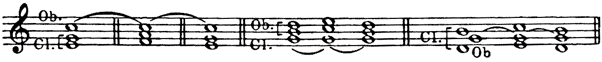
Ob.＝雙簧管，Cl.＝豎笛，Fl.＝長笛。
- 三組和弦進行依照持續聲部和移動聲部的關係配置；
- 最右一組為包夾，與正文上方的「右例」標示對應。
B. 三管編制。三聲部密集和弦如何分配，在這裡相當明確；三件相同音色的樂器，無論如何組合，都能有良好音響：
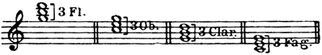
- 由左至右：3 Fl.＝3支長笛；
- 3 Ob.＝3支雙簧管；
- 3 Clar.＝3支豎笛；
- 3 Fag.＝3支低音管。
每組分奏三聲部密集和弦，數字3是樂器數，不是三度音程。
| 也可採用： | 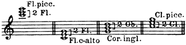 |
- 同一家族成員的三聲部組合：Fl. picc.＝短笛，2 Fl.＝2支長笛，Fl. c-alto＝中音長笛；
- 2 Ob.＝2支雙簧管，Cor. ingl.＝英國管；
- Cl. picc.＝高音豎笛，2 Cl.＝2支豎笛。
由短笛或高音豎笛補上高處、由中音長笛或英國管補上下方，依原圖排列。
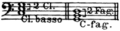
- 左例：2 Cl.＝2支豎笛，Cl. basso＝低音豎笛；
- 右例：2 Fag.＝2支低音管，C-fag.＝倍低音管。
兩例均用同一家族的較低樂器補成第三聲部。
寫作四聲部密集和聲時，最好採分層配置：三件相同音色的樂器，加上第四件不同音色的樂器。也可以使用交叉與包夾配置，但須留意音色的配合，以及相距較遠聲部的進行：
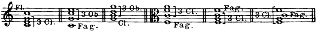
四聲部和弦的分層、交叉及包夾示例。
- Fl.＝長笛，3 Cl.＝3支豎笛，3 Ob.＝3支雙簧管，Fag.＝低音管；
- 各例以三件同類樂器配一件不同樂器。
括號與聲部次序完整保留。
三件相同音色的樂器，若採三聲部開放排列，效果就比較差：
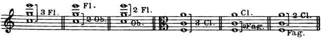
- 六例由左至右：3支長笛；
- 1支長笛加2支雙簧管；
- 2支長笛加1支雙簧管；
- 3支豎笛；
- 1支豎笛加2支低音管；
- 2支豎笛加1支低音管。
評語依序為不佳、較佳、較佳、不佳、較佳、較佳。
Fl.＝長笛，Ob.＝雙簧管，Cl.＝豎笛，Fag.＝低音管。
由左至右：不佳、較佳、較佳；不佳、較佳、較佳。
但若第三件樂器本身屬於低音域，例如中音長笛、英國管、低音豎笛或倍低音管，便能獲得令人滿意的共鳴：
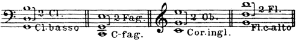
以同一家族較低音域的樂器補成第三聲部。
- 2 Cl.＝2支豎笛，Cl. basso＝低音豎笛；
- 2 Fag.＝2支低音管，C-fag.＝倍低音管；
- 2 Ob.＝2支雙簧管，Cor. ingl.＝英國管；
- 2 Fl.＝2支長笛，Fl. c-alto＝中音長笛。
四聲部和弦應由三件相同音色的樂器，再加第四件不同音色的樂器共同演奏：
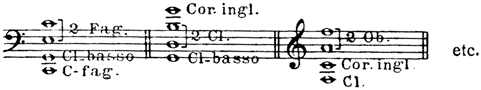
- 四聲部的三加一組合：2 Fag.＝2支低音管，C-fag.＝倍低音管，Cl. basso＝低音豎笛；
- 2 Cl.＝2支豎笛，Cor. ingl.＝英國管；
- 2 Ob.＝2支雙簧管，Cl.＝豎笛。
- 各和弦保留原圖的音域與括號；
- etc.＝依此類推。
查看英文原文
Four-part and three-part harmony.
Harmonic writing for the wood-wind may be considered from two points of view: a) instruments in pairs, 2 Fl., 2 Ob., 2 Cl., 2 Fag.; and b) instruments in three's, 3 Fl., 2 Ob., Eng. horn, 3 Cl., 2 Fag., C-fag.
A. In pairs. There are three ways of distribution: 1. Superposition or overlaying (strictly following the normal order of register),-73- 2. Crossing, and 3. Enclosure of parts. The last two methods involve a certain disturbance of the natural order of register:
Overlaying. Crossing. Enclosure.
In choosing one of these three methods the following points must not be forgotten: a) the register of a particular isolated chord; the soft and weak register of an instrument should not be coupled with the powerful and piercing range of another:
| Overlaying. | Crossing. | Enclosure. |
| Oboe too piercing. |
Low notes of the flute too weak. |
Bassoon too prominent. |
b）
In a succession of chords the general progression of parts must be considered; one tone quality should be devoted to the stationary and another to the moving parts:
When chords are in widely-divided four-part harmony notes may be allotted in pairs to two different tone qualities, adhering to the normal order of register:
| Good: | etc. |
Any other distribution will result unquestionably in a grievous lack of relationship between registers:
| To be avoided: | etc. |
If one tone quality is to be enclosed, it must be between two different timbres:
| Good: | etc. | |
| [ |
It is possible to lend four distinct timbres to a chord in widely-divided four-part harmony, though such a chord will possess no uniformity in colour; but the higher the registers of the different instruments are placed, the less perceptible becomes the space which separates them:
Fairly good Better Still better
The use of four different timbres in close four-part harmony is to be avoided, as the respective registers will not correspond:
Bad Better Still slightly better
Note. In Mozart and Salieri, which is only scored for 1 Fl., 1 Ob., 1 Cl. and 1 Fag., wood-wind chords in four-part harmony are of necessity devoted to these four different timbres.
The same rules apply to writing in three-part harmony, which is the most customary form when it is a question of establishing a harmonic basis, the lowest register of which is entrusted to another group of instruments (strings arco or pizz., for example). Chords in three-part harmony are generally given to two instruments of one timbre and a third instrument of another, but never to three different timbres. Overlaying of parts is the best course to adopt:
The use of crossing and enclosure of parts (which in a way amount to the same thing) must depend on the manner of their progression:
Enclosure:
B. Wood-wind in three's. Here the distribution of chords in close three-part harmony is self-evident; any grouping of three instruments of the same timbre is sure to sound well:
| also: | |
| [ |
Overlaying of parts is the best method to follow in writing close four-part harmony; three instruments of the same timbre with a fourth instrument of another. Crossing and enclosure of parts may also be employed. Correspondence of timbres and the progression of remote parts must be kept in mind:
The method of using three instruments of the same timbre in widely-divided three-part harmony is inferior:
Not good Better Better Not good Better Better
But if the third instrument is of low register (Bass Fl., Eng. horn, Bass cl., or C-fag.), the resonance will be satisfactory:
In chords of four-part harmony, three instruments of the same timbre should be combined with a fourth instrument of another: